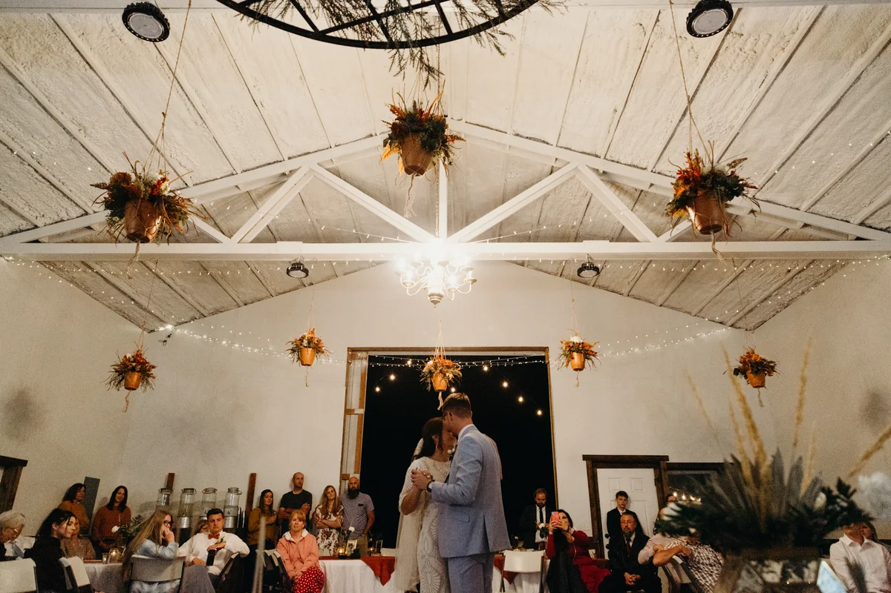

Two photographs for the hero
Same layout, same words, two different first impressions. Scroll both and tell us which one. Either is a one line change.
Same layout, same words, two different first impressions. Scroll both and tell us which one. Either is a one line change.
Option one
Sells the setting. In one frame you get the truck and geraniums, the farm's own sign, the grain bin, the red barn, the tent and guests arriving. Someone who has never heard of you understands what the place is before they read a word. It is daylight and outdoors, so it reads as a working farm first and a wedding venue second.

Option two
Sells the feeling. A couple dancing, the room full, hanging florals, string lights and the doors open onto the dark. This is the better photograph and the stronger emotional hook, and it is the one couples picture themselves inside. The trade is that it shows a room rather than a farm, so the setting has to be carried by the sections below it.
Note what is missing: the chandelier and the white trusses sit above this crop. They are the best architecture in the building, and the only way to include them is to push the couple and the guests below the fold.

Whichever loses here does not go to waste. The truck is the natural opener for a gallery or an about section, and the hall is already doing work further down the page. There is also the option of rotating the hero seasonally, since the truck is spring and summer and the hall is an evening in autumn.